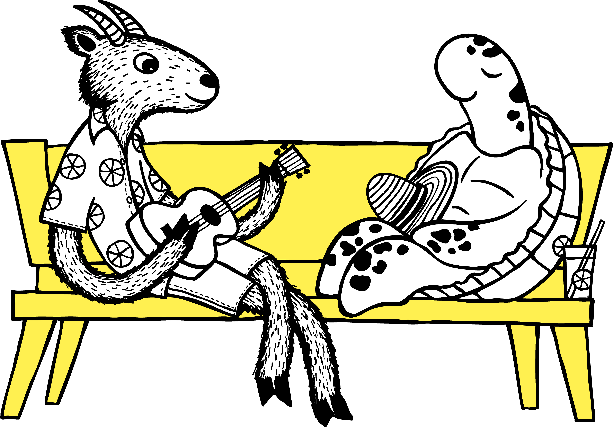
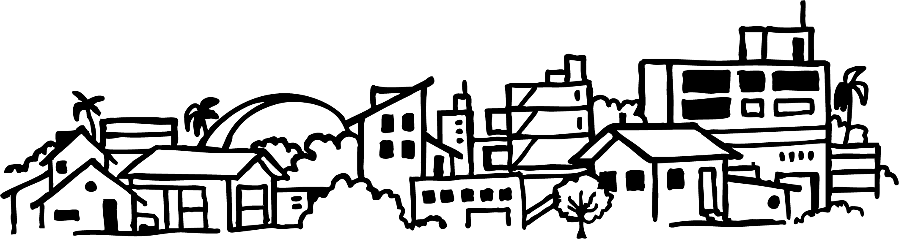

のるーと日向+南部ぷらっとバス
現在地や目的地から近いバス停を探したり、バス停名称で検索したりできます。
目的地検索： © OpenStreetMap contributors
現在地を使う場合はボタンを押してください。


現在地検索または名称検索を行ってください。
バス停を選択すると、地図上に経路を表示します。
のるーと日向と南部ぷらっとバスのバス停をGoogleマップで表示しています。
のるーと日向+南部ぷらっとバス バス停検索
受付時間：平日 8:30〜17:00
電話番号を押すと電話をかけられます。